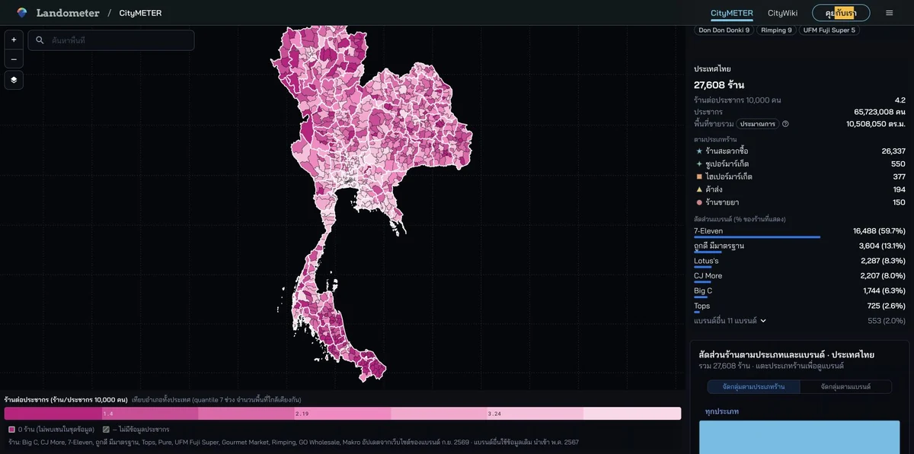

Location· CityMETER · ประเทศไทย
ร้าน 7-Eleven 16,488 แห่ง ทำให้เห็นอะไรในเครือข่ายค้าปลีก
ร้านค้าปลีกและค้าส่งในฐานค้าปลีก 27,608 ร้านจาก 17 แบรนด์ มี 7-Eleven 16,488 ร้าน ตัวเลขนี้ทำให้เห็นน้ำหนักของเครือข่ายหนึ่งในชุดร้านที่บันทึกไว้ และชวนเปลี่ยนจากการมองยอดรวมประเทศมาดูว่าแต่ละพื้นที่มีร้านแบบใดอยู่ร่วมกัน
มุมมองข้อมูลใน CityMETER

ประเทศไทย · ฐานร้านที่เปิดเมื่อ 10 ต.ค. 2569 · จำนวนร้านและแบรนด์ในฐาน · ตัวเลือกความหนาแน่นใช้ร้านต่อประชากร 10,000 คน
- ช่วงเวลาของข้อมูล
- บางแบรนด์ตรวจ 29–30 ก.ย. 2569 · ฐานเดิมนำเข้า พ.ค. 2567
- พื้นที่ครอบคลุม
- เครือข่ายค้าปลีก ค้าส่ง และร้านขายยาที่มีในฐาน
- ระดับรายละเอียด
- สาขา · แบรนด์ · พื้นที่ขายประมาณตามประเภท
- ผู้เผยแพร่ข้อมูล
- เว็บไซต์สาขาของแบรนด์ · ฐาน CityMETER เดิม
การเลือกซื้อของเกิดในเครือข่ายหลายแบบ
ร้านสะดวกซื้อ ซูเปอร์มาร์เก็ต ค้าส่ง และร้านขายยามีบทบาทในแผนที่คนละแบบ การดูแยกประเภทช่วยให้ทีมวางแผนตลาดเลือกคู่เทียบที่สอดคล้องกับบริการที่จะทำ เช่น เริ่มจากร้านชนิดที่เกี่ยวข้องกับสินค้า แล้วค่อยอ่านแบรนด์ที่กระจายอยู่ในพื้นที่ จำนวนระดับประเทศช่วยเปิดภาพเครือข่าย แต่ประเด็นที่ลงมือศึกษาต่อได้อยู่ที่บริเวณที่กำลังพิจารณาและประเภทการซื้อที่ต้องการทำความเข้าใจ
เปลี่ยนตัวหารแล้วคำถามก็เปลี่ยน
จำนวนร้านตอบว่ามีรายการอยู่เท่าไรในพื้นที่ ส่วนร้านต่อประชากร 10,000 คนช่วยจัดบริบทให้จำนวนดังกล่าว เมื่อใช้ฐานประชากรและขอบเขตเดียวกัน ทีมสามารถเริ่มเทียบว่าพื้นที่ใดมีเครือข่ายร้านหนาแน่นในความหมายนี้ จากนั้นค่อยเลือกจุดลงสำรวจ ตัวเลขทั้งสองควรอยู่คู่กันในบันทึก เพื่อให้คนอ่านรู้ว่ากำลังคุยเรื่องขนาดของเครือข่ายหรือจำนวนร้านเมื่อเทียบกับประชากรที่ใช้เป็นฐาน
ให้การลงพื้นที่ตอบสิ่งที่หมุดยังเล่าไม่จบ
หลังเห็นกลุ่มร้านที่สนใจ ลองจัดเส้นทางสำรวจสั้น ๆ เพื่อดูประเภทสินค้า ทางเข้า และบริบทของพื้นที่รอบร้าน การมีข้อมูลแบรนด์และชนิดร้านตั้งต้นช่วยให้ทีมแบ่งหน้าที่ได้ เช่น คนหนึ่งดูการเข้าถึง อีกคนจดรูปแบบร้านที่พบ บันทึกภาคสนามควรผูกกลับกับรายการที่เปิดดูไว้ เพื่อให้สิ่งที่พบเพิ่มความเข้าใจต่อเครือข่ายเดิม และช่วยกำหนดว่าจะต้องกลับไปตรวจเรื่องใดอีก
อ่านส่วนแบ่งให้ตรงกับสิ่งที่นับ
จำนวน 16,488 ร้านของ 7-Eleven มีความหมายเมื่ออ่านกับฐาน 27,608 ร้านและตัวเลือกแบรนด์ที่เปิดอยู่ ทีมสามารถใช้สัดส่วนจำนวนร้านวางภาพการแข่งขันเชิงเครือข่าย แล้วนำคำถามที่ได้ไปศึกษาร้านจริงในพื้นที่ หากเปลี่ยนประเภทหรือแบรนด์ที่เลือก ควรบันทึกชุดใหม่ไว้ด้วย งานที่นำไปใช้ต่อได้จึงเป็นภาพเครือข่ายที่มีฐานนับชัดเจน พร้อมพื้นที่และคำถามสำหรับการสำรวจ
ลองดูพื้นที่ของคุณ
เลือกประเภทและแบรนด์ที่เกี่ยวกับตลาดของคุณ เทียบจำนวนกับร้านต่อประชากร แล้วเลือกพื้นที่หนึ่งสำหรับสำรวจร้านจริง
แหล่งข้อมูลและข้อควรรู้ผู้เผยแพร่ ช่วงเวลา พื้นที่ครอบคลุม และแหล่งอ้างอิง
แหล่งเฉพาะทาง
- ผู้เผยแพร่ข้อมูล
- เว็บไซต์สาขาของแต่ละแบรนด์ และฐาน CityMETER เดิม
- ที่มา
- บางแบรนด์อ้างอิงเว็บไซต์สาขาโดยตรง บางรายการใช้ข้อมูลเดิมหรือพิกัดที่ตรวจด้วยมือ ให้ดูที่มารายสาขา
- ช่วงเวลาของข้อมูล
- เว็บไซต์บางแบรนด์ตรวจ 29–30 กันยายน 2569; ฐานเดิมนำเข้า 12 พฤษภาคม 2567 โดยไม่ทราบวันเก็บต้นทาง
- พื้นที่ครอบคลุม
- เครือข่ายแบรนด์ที่มีในฐานข้อมูล ครอบคลุมค้าปลีก ค้าส่ง และร้านขายยา ไม่ใช่ร้านค้าทุกแห่ง
- ระดับรายละเอียด
- สาขา แบรนด์ และประเภทร้าน; พื้นที่ขายเป็นค่าประมาณตามประเภท
อ่านเพิ่มเมื่อต้องเปรียบเทียบหรืออ้างอิง
สัดส่วนจากสาขาในฐานข้อมูลไม่ใช่ส่วนแบ่งยอดขาย พื้นที่ขายเป็นค่าประมาณ และไม่ได้รวมร้านค้าทุกแห่ง
จำนวนสาขาและสัดส่วนในฐานข้อมูลไม่ใช่ยอดขาย ส่วนแบ่งรายได้ หรือความต้องการซื้อจริง ต้องตรวจสถานะสาขาและพื้นที่ขายก่อนใช้วางแผน
ภาพตัวอย่างที่จับเมื่อ 10 ตุลาคม 2569 ตัวเลขและตัวเลือกอาจเปลี่ยนเมื่อเปิดใช้งาน
ตัวอย่างที่เปิดดู
 เคนร่วมพัฒนา
เคนร่วมพัฒนา